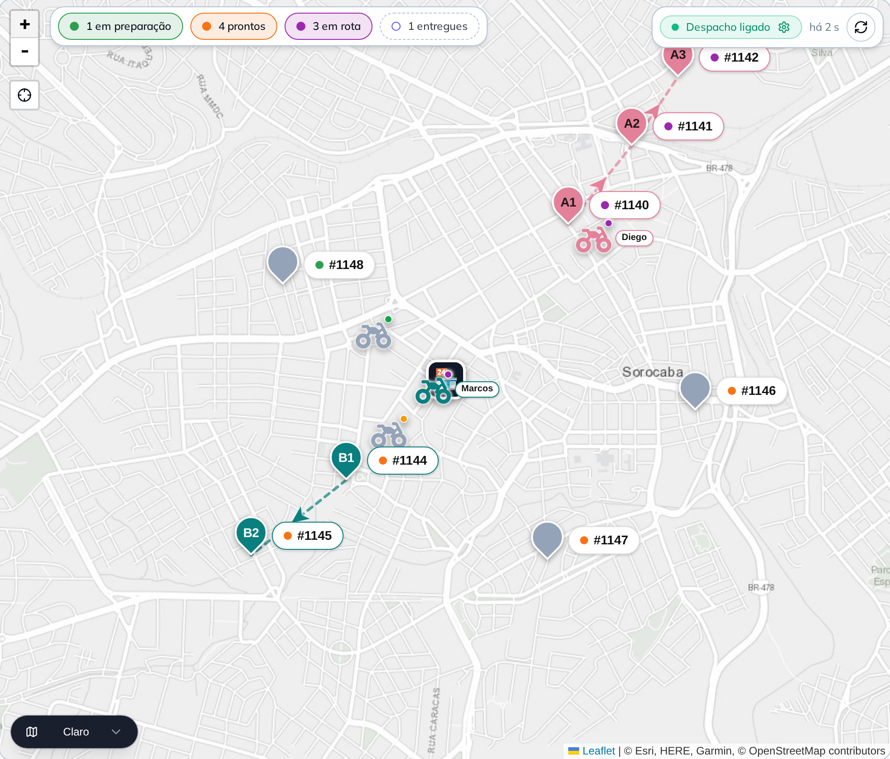
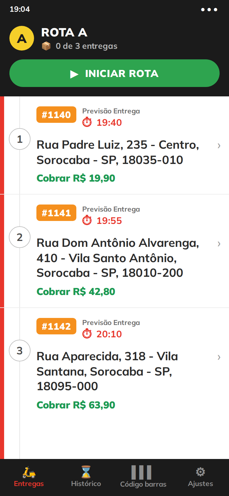

<!-- Capa, versão COM O CELULAR JUNTO. Alternativa à `slides/01-capa.html`, que
     traz só o notebook.

     Qual usar é escolha de quem publica, e a troca é real:

     - **só notebook** — o mapa fica limpo de ponta a ponta.
     - **notebook + celular** — a capa já diz "tem painel e tem aplicativo" sem
       gastar linha de texto. Vale quando o post vai para um público que ainda
       não sabe que existe app do entregador.

     O NOTEBOOK NÃO DIMINUI. A primeira versão desta capa reduziu o aparelho de
     936 para 776 px para abrir espaço ao lado, e o retorno do dono foi direto:
     *"o pc diminuiu pq? apenas incluir o celular"*. Ele está certo, e o motivo
     é de arte: as duas capas precisam ser trocáveis, e aparelho de tamanho
     diferente muda o peso do slide inteiro — a alternativa parava de ser a
     mesma capa com uma coisa a mais e virava outra composição.

     Então o notebook é o mesmo, no mesmo lugar, e o celular entra NA FRENTE,
     encostado na quina direita dele. Ele cobre um pedaço do canto do mapa, e
     esse é o preço certo a pagar: o canto direito do mapa é área sem rota
     desenhada, e sobreposição é o que faz os dois aparelhos lerem como uma
     mesa, em vez de dois recortes lado a lado.

     Mora numa pasta separada de propósito: o `renderizar.py` transforma em PNG
     todo `.html` de `slides/`, e duas capas na mesma pasta virariam um carrossel
     de dez imagens com dois slides "1 de 9".

     As duas imagens sobem dois níveis (`../../imagens-puras/`) porque são as
     mesmas do carrossel — a do notebook é a captura do mapa do slide 1, a do
     celular é a rota desenhada do slide 5. Nenhuma foi duplicada.

     O texto é igual ao da capa principal, palavra por palavra: as duas versões
     precisam ser trocáveis sem reescrever nada.

     O celular vem na frente e um pouco mais baixo, encostando na quina direita
     do notebook. Os dois sangram pela base, que é a convenção de capa da casa:
     a borda de baixo do slide lê como mesa. -->
<div class="slide slide--capa">
  <div class="topo">
    <span class="logo"></span>
    <span class="contador">1 de 9</span>
  </div>

  <div class="pilha g24" style="margin-top: 30px; max-width: 900px">
    <span class="pilula pilula--novidade">Novidade</span>
    <h1 class="titulo titulo--medio">
      <span class="destaque">Gestão de Entregas</span>:<br>rota, entregador
      e mapa<br>numa tela só
    </h1>
    <p class="subtitulo">
      O sistema agrupa os pedidos e escolhe quem sai.
    </p>
  </div>

  <div class="luz" style="left: 50%; top: 600px; width: 1300px; height: 860px;
                          margin-left: -650px; filter: blur(72px);
                          background: radial-gradient(ellipse 46% 50% at 50% 47%,
                                      rgba(255, 246, 236, 0.85) 0%,
                                      rgba(255, 214, 184, 0.34) 62%,
                                      rgba(0, 0, 0, 0) 82%)"></div>

  <div class="sangria" style="top: 690px; left: 50%; transform: translateX(-50%);
                              width: 936px">
    <div class="notebook" style="width: 936px">
      <div class="notebook__tela">
        
      </div>
      <div class="notebook__base"></div>
    </div>
  </div>

  <div class="sangria" style="top: 796px; left: 752px; width: 296px">
    <div class="celular" style="width: 296px">
      <div class="celular__tela">
        
      </div>
    </div>
  </div>
</div>
